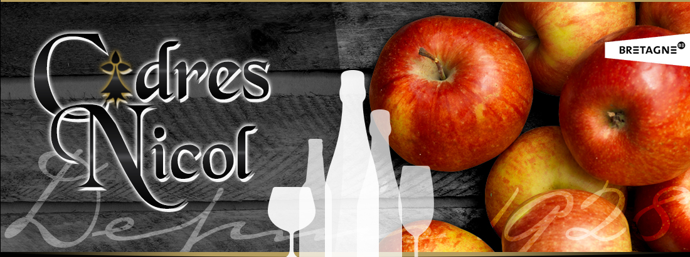
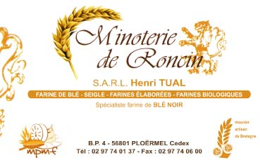

Notre Philosophie
« Manger une bonne galette et une bonne crêpe dans un cadre chaleureux »
Un préambule qui semble simple mais qui n’est pas une évidence.
C’est en cultivant le goût de l’authentique, basé sur ses souvenirs de vacances en Bretagne, que Jean-Luc à élaboré ses recettes et ses techniques de crépiers.
En sélectionnant des produits artisanaux en provenance directement de Bretagne, il a à cœur de développer des arômes qui vous transporteront dans cette belle région.
Les Pâquerettes : un coup de cœur en 2006 qui nous a permis d’ouvrir notre restaurant en adéquation avec nos envies.
C’est dans ce lieu atypique, où l’on se croirait en vacances, et où l’on prend son temps, que vous trouverez un accueil chaleureux et convivial qui favorise les discussions et les échanges.
Après 15 années au service de la restauration traditionnelle jumelée à la crêperie, Jean-Luc et Christine se recentre sur leur cœur de métier et le restaurant bascule en crêperie uniquement.
Parce que nous aimons le goût des bonnes choses, nous vous proposons une carte élaborée sur des produits simples et qualitatifs, en partenariat avec des producteurs locaux ou en circuit court.
Qui nous sommes :
Après des années de conseil en assurances, Jean-Luc « tombe » dans la crêpe. Il y découvre un métier qui lui parle de part ses origines bretonnes mais aussi de part le plaisir de servir un produit simple et gourmand.
En 2004, il rencontre Christine qui travaille dans l’audiovisuel et l’animation.
En 2006, ils se lancent dans « l’aventure des Pâquerettes », où très vite Jean-Luc se réalise à travers de multiples recherches culinaires: le pain, le Kouign Amann, la pâtisserie bretonne. Convaincus des bienfaits du sarrasin, ils développent plusieurs produits maison: kouign amann, palets blé ou sarrasin, langue de chat au sarrasin, kouign-fou, kouignette, far aux pruneaux, roulés apéritifs au sarrasin, chips de sarrasin…
En terrain de connaissance, puisqu’Antony est sa ville natale, où sa famille est installée depuis 1874, Christine développe les atouts des Pâquerettes pour que chacun s’y sente bien: un coin jeu pour enfant, une terrasse fleurie et ensoleillée, un cadre accueillant, un service simple et souriant.
Carte de nos Galettes :


Voici une musique bretonne pour vous mettre dans l'ambiance de notre Crêperie :
Vente à emporter :
Voici notre carte de Vente à Emporter, pour régaler vos papilles!
Des spécialités bretonnes à découvrir selon les horraires suivants :
Du mercredi au samedi Du jeudi au samedi
Le midi :
11h30 - 14hLe soir :
18h30 - 20h30
Afin de pourvoir gérer la vente à emporter, merci de nous passer votre commande 48h à l'avance par téléphone (01 46 66 07 45) ou par mail (commande@lespaquerettes.com) en indiquant votre Nom, Prénom et n° téléphone .
Soirées à thème :
Retrouvez des intervenants de qualité (chanteurs, musiciens, magiciens, conteurs…) autour d’un repas 100% fait maison, et souvent à l’inspiration bretonne.
Suite aux mesures sanitaires pour luter contre la propagation du Coronavirus, nous suspendons momentanément nos soirées à thèmes.
A très bientôt
Pour recevoir le programme de nos soirées, merci de nous laisser votre adresse e-mail en cliquant sur ce lien !
Nos partenaires :
Parce que sans eux, notre crêperie ne serait pas ce qu’elle est, nous vous présentons nos producteurs qui nous permettent de régaler vos papilles:
La Cidrerie NICOL
http://www.cidres-nicol.bzh
Le CAT Bois Jumel
http://www.boisjumel.com
La brasserie Lancelot
http://brasserie-lancelot.bzh
La Minoterie de Ronçin
http://www.minoterie-de-roncin.fr
Les p’tites cocottes d’Edith

http://www.ptitescocottes.fr/